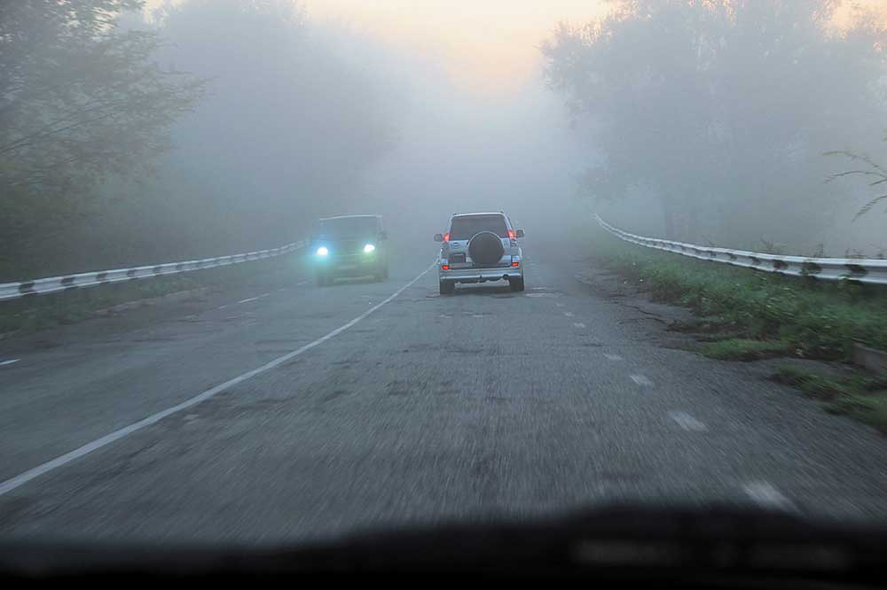

видимость дороги — максимальное расстояние в направлении движения, на котором с места водителя можно распознать элементы дороги и технические средства организации дорожного движения перед транспортным средством и правильно ориентироваться при управлении им;

Видимость дороги в условиях тумана.
Фото Игоря Широкуна и Hella с сайта
autocentre.ua
Видимость дороги - насколько далеко видно.
В ПДД видимость дороги обуславливается только атмосферными факторами, влияющими на прозрачность воздуха: дождь, снег, пыль, дым, туман, смог и другие.
В ПДД выделяются три фактора, из-за которых "плохо видно":
Водителю при многих маневрах необходимо отслеживать ситуацию не только впереди, себя, но и сзади: для этого сдужат зеркала заднего вида, которые не могут обеспечить обзор на 180 градусов, из-за так называемых "мертвых" зон, в которых вообще ничего не видно.
Также, чтобы видеть дорогу, водетелю запрещается ездить с грязным ("с загрязнениями и наслоениями") стеклом, с трещиной на лобовом стекле, с чересчур темными стеклами, с наклейками на лобовом стекле больше определенной толщины.
Вообщем видимость дороги - фактор, ограниченный прозрачностью воздуха.
В тестах про видимость дороги встречаются варианты:
Иногда видимость дороги может составлять несколько метров: из-за сильного тумана или ливня.